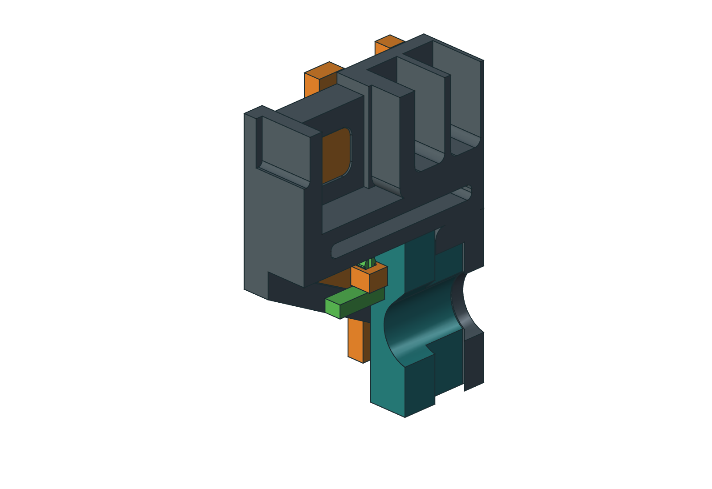
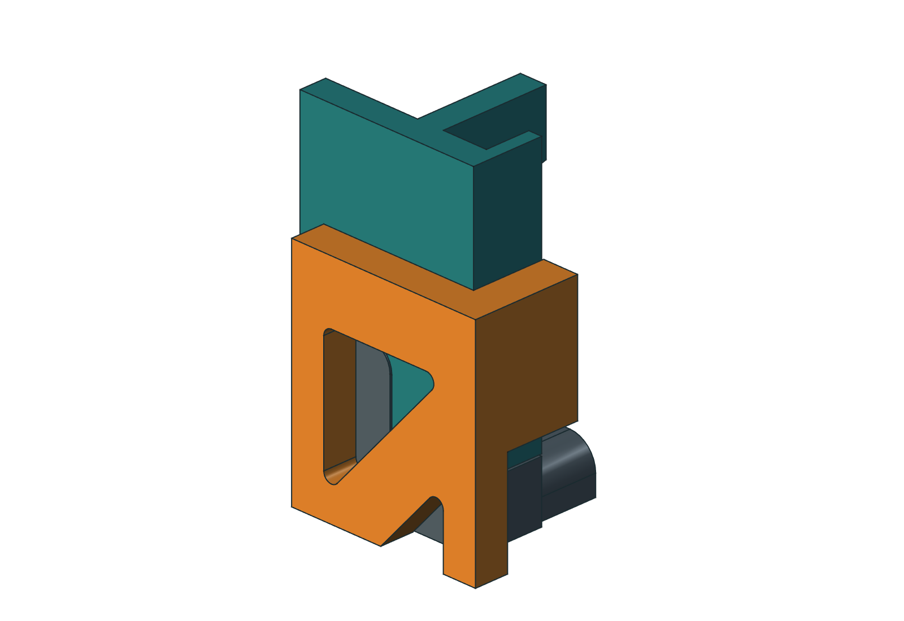
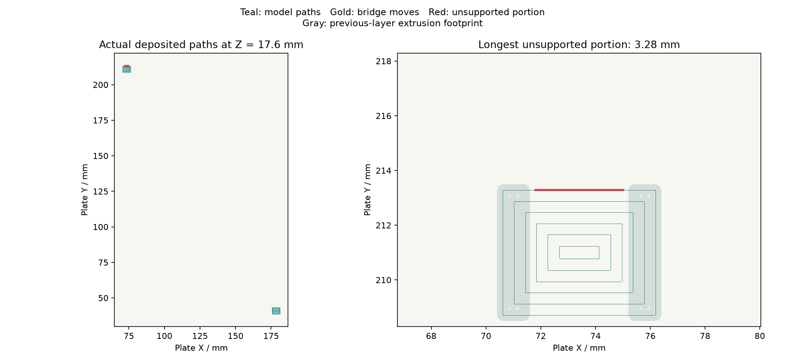
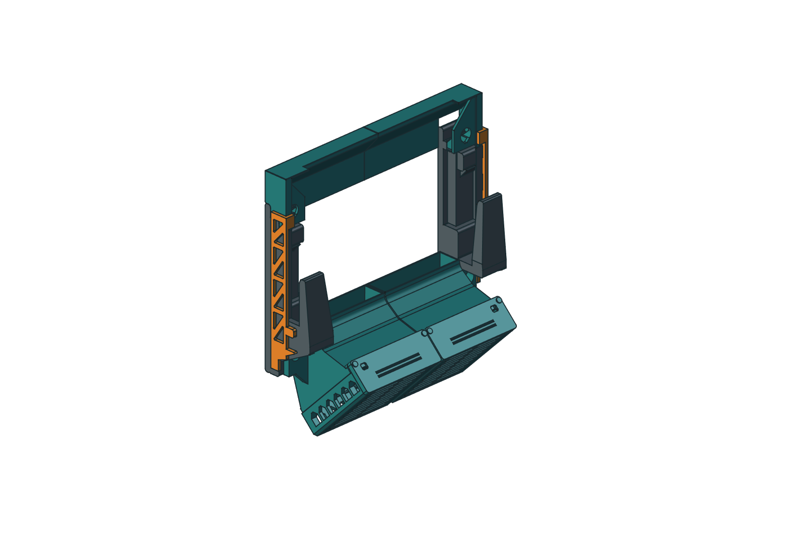

Keep your printed arms.
Make the joints removable.
Two orange side bars hold the Rev H fan ducts and upper outlet rails against forward withdrawal. Two green keyed keepers secure the bars to the existing arm windows. All fourteen original Rev H parts keep their geometry.
Download native model, four parts and fit coupon ↓
Designed for the preserved Precision 5560 Rev H geometry and its already printed arms. The added parts need no arm drilling, extra metal fasteners or adhesive at the duct-to-arm and rail-to-arm joints. They are a fit-test candidate; physical retention, warm ASA creep and strength remain untested.


1. Test the short coupon on your right arm
- Extract the ZIP. Open
Print/01_right_arm_fit_test.3mfin OrcaSlicer as geometry. It contains the short right-hand key and its keeper. Keep the supplied orientation and 100% scale. - Select your P1S, 0.4 mm nozzle and the ASA profile for the actual spool. Use 0.20 mm layers, 6 walls, 6 top and bottom layers, 100% rectilinear fill, Arachne walls, 8 mm outer brim and supports off. Temperature and drying follow the spool instructions.
- Remove brim and burrs. Align the orange test piece with the right arm's triangular gusset window and the rounded guide window above it, then slide both keys inward together from the outboard side. The tab projects just inside the arm. The key should seat by hand, without forcing or visibly spreading the arm.
- Push the matching keeper upward through the square socket from below. Its long green foot points forward, toward the room, on the inner side of the gusset. The split crown must emerge fully above the orange tab. Check that the seated keeper prevents sideways removal of the key.
- Release the two crown fingers inward with a small blunt tool and pull the foot down. Verify several gentle installation/removal cycles and inspect the slot root. If it binds, fails to latch, cracks, or can escape while latched, stop and adjust the fitted geometry before printing the full bars. The short key is a test piece, not an installed retainer.
The square stem is 3.0 mm in a 3.6 mm socket. The 3.8 mm split crown requires nominal 0.10 mm deflection per finger to pass. The keyed stem keeps the eccentric catch foot oriented toward the arm. These nominal dimensions do not account for your printer's shrinkage or first-layer expansion.
2. Print the four add-on parts
Left and right are named as you face the wall from the room. Print Print/00_four_retainer_parts.3mf once. It contains both handed bars and both handed keepers. The individual files below are replacement alternatives; do not print them in addition to the combined plate. STL, STEP and standard 3MF are alternate formats for the same geometry.
| Part | Quantity | Supplied print orientation |
|---|---|---|
| 15 — left side retainer | 1 | Flat outboard face down |
| 16 — right side retainer | 1 | Flat outboard face down |
| 17 — left retainer keeper | 1 | Catch foot down, split crown up |
| 18 — right retainer keeper | 1 | Catch foot down, split crown up |
The bars are 231 mm long with 5 mm thick outer trusses. The installed pair adds 10.6 mm to the mount's overall width. The plate preserves room for the 8 mm brim and P1S cutter exclusion. Standard 3MF files contain geometry and placement, without slicer settings. The separate Orca_Review files contain the reviewed settings and G-code; re-slice for your actual spool.
The four-part plate is estimated at 59.21 g and 2 h 13 m 41 s in Orca. The right-arm coupon plate is 13.92 g and 0 h 39 m 0 s. The four parts total 60.65 g by native solid volume at 1.05 g/cm³; that is a separate calculation. Both Orca plates have zero disconnected floating components in the deposited-path screen. The maximum unsupported deposition span is 3.28 mm. This screens geometric support and does not prove ASA bridge quality.

3. Fit the complete retainers
- Keep the laptop off the mount. Support the fan assemblies and upper rails during fitting and servicing. Assemble the original Rev H parts and fully seat their keys and shoulders; leave the duct-to-arm and rail-to-arm joints free of glue when testing this removable retention.
- Orient each bar with the long truss outside its arm, the triangular window key and heel at the bottom, the smaller guide key above them, and the rail stop at the top. Slide it inward from the outboard side. Both keys enter their arm windows together, the lower tab overlaps the duct saddle, and the upper tab overlaps the rail's forward lip.
- Insert the matching handed keeper upward from below. Its catch foot must lie on the inner side of the gusset and point forward. Confirm both split crowns latch above their tabs and both feet overlap the inner gusset material.
- With the assemblies still supported, check seating and gentle forward withdrawal at each duct and rail. The new stops have nominal 0.30 mm gaps. Any visible bending, loose capture, incomplete seating or keeper movement needs investigation before loading the mount.
- For removal, support both the duct and rail on the side being serviced, release and pull its keeper down, then slide the bar outward. Removing one bar releases both modules on that side. The original shoulders and keys still carry the intended assembly loads; these bars provide withdrawal retention.

4. What the checks establish
The native file was made with Save As from the preserved Rev H model. It retains the original source features and adds nineteen fully constrained sketches with stock Part extrusions, fillets, booleans and mirrors. The H-R1 copy uses fixed installed links instead of the older assembly joints with invalid saved references. No custom geometry proxy is needed to open or recompute it. This add-on is fixed to the preserved Rev H snapshot; changing the original spreadsheet does not automatically resize or reposition its retainers. Recheck any edit.
Native validation checks all fourteen original solids against Rev H, both arms against their frozen print geometry, the four new single solids, clearances, laptop and wall-driver access, sampled keeper/bar removal, and positive stop interference after small attempted withdrawal. Print and release evidence records STEP roundtrips, closed meshes, plate clearance, source hashes and Orca path screening.
These are geometric checks. They do not establish allowable load, bar stiffness under an actual pull, keeper life, layer adhesion or hot ASA creep. Start with the coupon and a supported trial. The bars sit outside the existing arms; the original duct airways are unchanged. The Rev H CFD commissioning limitations remain in effect, and this add-on has no new airflow result.